2015年北京市中考英语试题 原卷解析
2015年北京市高级中等学校招生考试
英 语 试 卷
学校________________姓名________________准考证号________________
考 生 须 知 | 1．本试卷共12页，满分120分，考试时间120分钟。 2．在试卷和答题卡上认真填写学校名称、姓名和准考证号。 3．试题答案一律填涂或书写在答题卡上，在试卷上作答无效。 4．在答题卡上，选择题用2B铅笔作答，其它试题用黑色字迹签字笔作答。 5．考试结束，请将本试卷和答题卡一并交回。 |
听力理解（共30分）
一、听对话，从下面各题所给的A、B、C三幅图片中选择与对话内容相符的图片。每段对话你将听两遍。（共5分，每小题1分）
1.
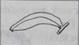 | 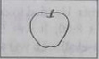 | 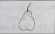 |
A. B. C.
2.
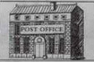 | 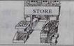 | 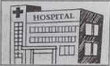 |
A. B. C.
3.
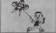 | 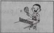 | 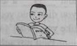 |
A. B. C.
4.
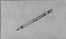 | 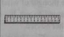 | 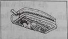 |
A. B. C.
5.
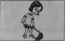 | 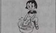 | 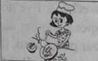 |
A. B. C.
二、听对话或独白，根据对话或独白的内容，从下面各题所给的A、B、C三个选项中选择最佳选项。每段对话或独白你将听两遍。（共15分，每小题1.5分）
请听一段对话，完成第6至第7小题。
6. When will Grandpa arrive?
A. AT 8:00 PM. B. At 7:00 PM. C. At 6:00 PM.
7. How is Grandpa coming?
A. By train. B. By bus. C. By car.
请听一段对话，完成第8至第9小题。
8. What is the woman studying?
A. English. B. Chinese. C. Maths.
9. What is the woman good at?
A. Playing the guitar. B. Playing the piano. C. Playing the violin
请听一段对话，完成第10至第11小题。
10. Where is the woman going?
A. To France. B. To Australia. C. To China.
11. Who will the woman visit?
A. Her friend. B. Her brother. C. Her teacher.
请听一段对话，完成第12至第13小题。
12. How is the weather tomorrow?
A. Cloudy. B. Rainy. C. Sunny.
13. What are the speakers mainly talking about?
A. A plan for tomorrow. B. Programmes on TV. C. Food for the dinner.
请听一段对话，完成第14至第15小题。
14. What can we know about the speaker?
A. He was a good football player.
B. He will take part in the game.
C. He likes maths and science.
15. Why does the speaker give the speech to the students?
A. To explain the rules of the game to them.
B. To encourage them to play football.
C. To introduce his school to them.
听对话，记录关键信息。本段对话你将听两遍。（共10分，每小题2分）
请根据所听到的对话内容和提示词语，将所缺的关键信息填写在答题卡的相应位置上。
Eastwood Store Date: June 8th Name: 16.________ Brown Address: No.11 17.________ Street Phone: 235-4618 Food: 1 | Six 18.________ | 2 | Two boxes of dark chocolate | 3 | Three bottles of 19.________ | 4 | A small bag of white sugar |
TOTAL: $ 20 ________ |
知识运用（共25分）
四、单项填空（共10分，每小题1分）
从下面各题所给的A、B、C、D四个选项中，选择可以填入空白处的最佳选项。
21. Miss Smith is very kind. We all like ____.
A. it B.her C.him D.them
22. We usually have the first class ____ 8:00 in the morning.
A.of B.in C.on D.at
23.Get up early, ____you’ll be late for school.
A.so B.and C.or D.but
24. —____ T-shirt is this?
— I think it’s T om’s.
om’s.
A.Whose B.Which C.What D.Who
25. I jumped ____ than Bill in the sports meet last year.
A.high B.higher C.highest D.the highest
26. – Jack, ____ you ride a bike?
–Yes, I can.
A.can B.may C.need D.must
27. – Mum, where is Dad?
– He ____ flowers in the garden now.
A.planted B.plants C.will plant D.is planting
28. My grandparents____ in that city since 2008.
A.will live B.live C.have lived D.were living
29.These model cars ____ in China in 2013.
A.are made B.were made C.make D.made
30. – Can you tell me ____ to London?
– Sure. Next month.
A.when you will travel B.when will you travel
C.when you travelled D.when did you travel
五、完形填空（共15分，每小题1.5分） 阅读下面的短文，掌握其大意，然后从短文后各题所给的A、B、C、D四个选项中，选择最佳选项。
The Phone Call
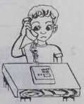
It was getting dark. Paul looked out of the window and signed (叹气). Dad said he could come home by 5:30, but it was almost 7:00. Even if Dad came back, it wouldn’t be much fun playing __31__ in the dark. Paul walked into his room and threw his baseball into the corner. He tried to do some homework, but couldn’t. The phone rang at about 8:00. It was Dad: “Paul, I’m __32__ , but I couldn’t play baseball with you tonight. I have to finish my work at the office. Maybe we can play this weekend. Oh no. How about next weekend?....”
Paul couldn’t understand why Dad was so __33__ . He threw himself into the sofa and soon fell asleep. His book was still opened to the first page.
The next day at school, Paul didn’t hand in his homework and __34__ a test. Mrs. Green, his teacher, asked him to stay after school. “Paul, you didn’t do your homework.You didn’t pass the test and only got a D. This isn’t like you. What’s wrong?”
Paul just sat there __35__ . “Paul, if you don’t want to talk, I will. I know that something’s worrying with you, but you have to get it out. You need to tell someone.”
As Paul walked home, he thought of what Mrs. Green said. Maybe he didn’t do his homework because he wanted to get his dad’s __36__ . He knew Mrs. Green was right. He decided to take her advice.
When Paul got home, he __37__ his dad. But there was no answer. Then it went to voicemail (语音信箱). Paul began talking: “Dad, I can’t play with you next weekend. I’ve got lots of problems with my homework. Also, I really don’t want to spend another day looking out of the window and waiting. Whenever you __38__ our plans, Dad, it hurts me. It’s not too late to rebuild our relationship, but we have to start small. Maybe you can help me with my __39__ sometime. Dad, I love you.”
As Paul ended the call, he felt much relaxed. He didn’t know whether his dad would be different, but it didn’t matter. He himself __40__ . He expressed his feelings to the right person. He had a clear head as he was doing his homework that evening.
31. A. baseball B. cards C. chess D. toys
32. A. lucky B. sorry C. surprised D. pleased
33. A. famous B. helpful C. lazy D. busy
34. A. made B. missed C. failed D. chose
35. A. cheerfully B. comfortably C. hopefully D. quietly
36. A. attention B. message C. praise D. trust
37. A. saw B. thanked C. called D. greeted
38. A. prepare B. break C. follow D. question
39. A. choice B. homework C. speech D. decision
40. A. regretted B. complained C. insisted D. changed
阅读理解（共50分）
六、阅读下列短文，根据短文内容，从短文后各题所给的A、B、C、D四个选项中，选择最佳选项。（共30分，每小题2分）
A
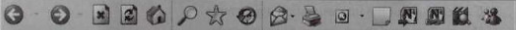 |
|
My favourite season…. |
Matt/UK: | My favourite season is spring, because everything is getting new and fresh again. I like having picnics and taking photos with my friends. I don’t like autumn, because I know that it’s going to be getting cold soon. |
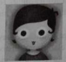 Anna/Germany: | Autumn is my favourite season. I love the changing of leaves. I like the colours. I love the autumn wind that blows the leaves around. And I often take a walk in that autumn air with a warm cup of coffee. My least favourite season is summer, because it’s too hot. |
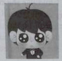 Neil/Canada: | I like summer best. It’s very cool in my hometown, and it’s nice to have a long and sunny summer. There are a lot of outdoor activities you can take part in, such as going camping. My least favourite is winter, because it’s pretty cold, and you don’t want to go outside. 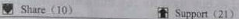 |
Kat/US: | My favourite season is winter, because there’s a lot of snow, and it’s very beautiful. When the countryside is covered with snow, it’s perfectly white. Also, I love building snowmen with my friends. So I like winter. 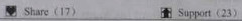 |
41. Matt’s favourite season is _____
A. spring B. summer C. autumn D. winter
42. Where is Anna from?
A. The US. B. Canada C. The UK D. Germany
43. What’s the weather like in Neil’s hometown in summer?
A. Wet B. Cool C. Windy D. Cloudy
44. In winter, Kat loves _____.
A. going camping B. taking a walk
C. building snowmen D. having picnics
B
Bags of Love
Last year, I worked in a middle school near my mother’s house, and I stayed with her for a month. During that time, I helped her do some housework and buy some food.
After the first week, I noticed that the food was eaten up very quickly. Then I began keeping an eye on my mum. To my surprise, I found that she would put some of the food into a paper bag and go out with it at about nine every morning. And finally, I decided to follow her. I saw her taking the food to the street children. She would also spend a lot of time talking and playing with them.
One day, I talked to a neighbour and found out that my mum was well-known in the area. The children were very friendly with her and even thought of her as their own mother. Then it hit me – why wouldn’t she want to tell me about it? Was she worried that I would stop buying food if I found out?
When my mum got home, I gave her a big hug (拥抱).I told her she didn’t need to keep it a secret from me. And she told me something about the children. Some of them lived with an old lady in a small house. Others slept on the street. For years, she was helping the poor street children by giving them food. After she told me everything, I was so moved by how selfless (无私的) she was. She helped others in need. As her son, I was so proud of my mum.
I continued to buy food for my mum after that. But I always added one more bag for her other children.
45. After the first week, the writer noticed that _____.
A. the food was put into a big box B. his mum followed the children
C. the food was eaten up quickly D. his mum stopped buying food
46. The street children thought of the writer’s mum as their _____.
A. old grandma B. own mother
C. new neighbour D. dear teacher
47. How did the writer feel about his mum after she told him everything?
A .He was proud of her. B. He was confident in her.
C. He was angry with her. D. He was worried about her.
48. The writer added one more bag of food to _____.
A. make friends with the children B. get a hug from his mother
C. become well-known in the area D. help the poor street children
C
 Do you enjoy visiting a museum? Did you ever make a plan before a visit? Every museum must have something that attracts you. And there are many possible ways to enjoy yourself in a museum.
Do you enjoy visiting a museum? Did you ever make a plan before a visit? Every museum must have something that attracts you. And there are many possible ways to enjoy yourself in a museum.
If you follow these steps below, you'll know what is worth seeing and doing, so that you can make the most of your time at the museum.
Decide what museum you will visit. There are so many different kinds of museums and you first need to find one that you like. It's easy for you to choose one and start an enjoyable visit!
Do some research online. Every museum now has a website which allows you to look through the information about it. On the website, you may look for such things as:
•The exhibits(展品)–See what is on show at the museum at all times, and what special exhibitions are held for a short time.
•The history of the museum –There will often be very interesting stories about the exhibits and the benefactors(捐赠者). That can make your visit more interesting.
•Activities –See whether there are talks, tours our special activities on the day when you visit. Many museums hold some activities that meet the interests of all age groups.
•Cost,food or shortage–It's important how much the visit will cost. You have to decide whether or not you can eat there. You might also need to find out transportation needs, as well as storage for coats, bags etc.
Learn at least one thing on your visit. It is always good to take away something new from your visit.
Plan breaks into your visit. When you walk around, standing here and studying exhibits there, you may become very tired. So it is important to take breaks. A break is a good opportunity for you to think of what you have seen and what else you might want to do in museum.
Take a friend or two. Visiting museums is always a lot more fun when you are with someone else. You can talk over what you’re seeing. A friend also brings another way of thinking when you talk about the exhibit.
49. According to the passage, we should first ____.
A. do some research online B. make a plan for lunch
D. decide on a museum to visit D. choose a friend to go with
50. To make our visit more interesting, we can____.
A. organize activities like special shows and talks
B. read the stories about exhibits and benefactors
C. learn about the interests of all age groups
D. walk around the museum without breaks
51.If we visit a museum with friends, we can____.
A. share the experience with them B. come up with strange ideas
C. cut down the cost of the visit D. discuss the next visit plan
D
New Technology Revolutionizes(变革) Learning
More and more people believe that technologies are great for learning. Today, such teaching tools as iPads are used in a lot of courses, including language, history and science.
Many teachers are supporters of using iPads in language learning. They say that students now have much more time for discussion in the classroom.Instead of spending valuable class time listening to texts or watching teaching videos, students can do this on their own and come to class prepared for discussion.
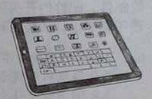
The teachers also say that iPads allow students to learn at their own pace. Some students might listen to a dialogue only once and understand it, so they can save time for doing other things. Other students, however, might need to listen to the same dialogue again and again to understand it. Using iPads is especially helpful to students who are learning a language at different paces. The students who are using the new tool in some courses are also happy. They believe that using iPads is a more enjoyable way to learn (such as listening to stories and watching movies). The class has become much more interesting and creative.
There are other advantages for students. By using iPads, they can pay more attention to the material and learn more. Teaching notes are stored in their iPads and are easy to find .Some students spend more time studying now.“I can listen to my language material or watch teaching videos on the bus, instead of having to wait until I get home,” a student explained.
Many adults complain that technologies such as iPads are doing harm to students. They worry that students might use iPads to download teaching notes and use them to cheat during exams. Some believe that iPads may separate students from each other. If a student spends more time watching videos on an iPad, he will have fewer opportunities to have face-to-face communication with others.
However, technologies are already a part of most students’ day-to-day lives. As for cheating, teachers can ask students to hand in their iPads when they take exams. Education needs to make changes with the times as technology is playing an important part. We should look forward to a wonderful future when iPads and other technologies can add a lot to the classroom.
53.What does the expression“at their own pace” in Paragraph 3 probably mean?
A. According to their own timetable. B. Without their teachers’ help.
C. Because of their wonderful goals. D. Against their parents’ hope.
54. From the passage we can learn that____.
A. students with iPads have less discussion in class
B. students get more fun from learning with iPads
C. iPads help students save time waiting for buses
D. iPads prevent students from cheating in exams
55. The writer probably agrees that____.
A. teachers can take control of students’ learning
B. exam results depend a lot on now technology
C. technology in education has a bright future
D. note-taking is as helpful as video-watching
七、阅读短文，根据短文内容，从短文后的五个选项中选出能填入空白处的最佳选项。每个选项只能用一次。（共10分，每小题2分）
A Special Delivery
Ben and Sally lived in California with their two daughters. Ben liked travelling. 56____________ , but sally stayed home with the girls. Ben and his friends owned a company. People at the company liked to play jokes on each other. One day, Ben’s friends wanted to play a joke on Ben and Sally. 57_____The letter said,
Dear Sally. I’m having a great time here in Africa. I’m sending a special gift to you. I hope you like it. Please take good care of it until I get home. Love to you and the kids, Ben |
.
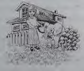
On the same day, Sally also got a phone call. The caller told her that a delivery was coming. At one o’clock, a truck stopped in front of Sally’s house. The truck driver gave Sally a rope. An animal was tied to the rope. It was a baby elephant! 58_____________ , and it began eating grass. Then the driver drove away. Sally stood there and held the rope to the elephant. She asked herself, “What can I feed an elephant with? Bananas?”
59_____________ . He said, “It’s illegal (非法的)to have wild animal here.” Then the policeman gave Sally a ticket.
Ben’s friends were hiding in the backyard and laughing. They had planned everything perfectly. They had rented (租借)the elephant from a zoo and asked the policeman to write the ticket! Ben’s friends also made a film of everything. 60_____________ .
When Sally learned about the truth, she couldn’t help laughing.
A. So they sent a letter to Sally B. After a while, a policeman came C. The elephant ran into Sally’s yard D. They wanted Ben to watch the video E. One summer, he went to Africa on a trip |
八．阅读短文，根据短文内容回答问题。（共10分，每题2分）
Black Friday
Thanksgiving is always on a Thursday. The day after it has been known as Black Friday. It is the start of the holiday shopping season, and it has been the busiest shopping day of the year in the US since 2005.
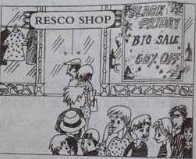
Most stores offer big sales on Black Friday. They open their doors quite early in the morning. They try to attract shoppers with big discounts (打折). Some items (商品)like TVs and cloths are much cheaper than usual. Stores may even lose money on these items. They hope that shoppers will buy gifts for other people while they are in the store. Black Friday is a great time to go shopping. However, there are problem. The biggest one is that there are not enough low-priced items. Each store may only have a few. These items are in great need, so people stand in long lines to get them. They may wait three to four hours before a store opens. They may be hoping to get a low price on a TV or computer, but not everybody can get one. Some people leave, disappointed.
The situation makes people worried. Some Black Friday events have been crazy. There have been fights over toys among shoppers. Some workers have even been hurt by large crowds. But most Black Friday events are safe and fun. Still, if you plan to go, you will expect large crowds and a bit of pushing.
So where does the name “Black Friday” come from? It was first used in Philadelphia in the 1950s. The police called this day Black Friday because of the heavy traffic it caused. In the 1960s, stores tried to rename the day “Big Friday”. It did not stick. The name “Black Friday” continued to spread across the country. It seems that it is here to stay.
Now people all over the country take part in Black Friday events. It is even spreading to other parts of the world. Stores have held Black Friday events in the UK, Australia, and Brazil since 2012. In Mexico, stores offer a weekend of discounts every year. They call it “El Buen Fin”, which means “the good weekend” in Spanish. I guess people everywhere like to buy things on sale.
61. Is Black Friday the start of the holiday shopping season?
62. What is the biggest problem with Black Friday?
63. How long may people have to wait before a store opens?
64. Where was the name “Black Friday” first used in the 1950s?
65. Why do people like going shopping on Black Friday?
书面表达（15分）
九．文段表达（15分）
根据中文和英文提示，用英文写一封意思连贯、符合逻辑、不少于50词的邮件。邮件的开头和结尾已给出，不计入总词数。所给提示词语仅供选用。请不要写出你的校名和姓名。
66. 假如你叫李华，你们学校为配合北京申办冬奥会，倡导人人都做文明中学生。请你根据以下提示，给你的英国笔友Peter写一封邮件，告诉他你认为做个文明中学生什么是重要的，你通常是怎么做的，以及你的感受。
提示词语：think, smile, respect, say hello to, wait in line, on time, happy
1. What is important for a middle school student? (Being polite to others? Following rules?…)
2. What do you usually do?
3. How do you feel?
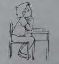
Dear Peter,
How is it going? At my school we’re talking about what we should do to be a good student.
_________________________________________________________________________
_________________________________________________________________________
_________________________________________________________________________
_________________________________________________________________________
_________________________________________________________________________
_________________________________________________________________________
_________________________________________________________________________
_________________________________________________________________________
Anything new at your school?
Yours,
Li Hua
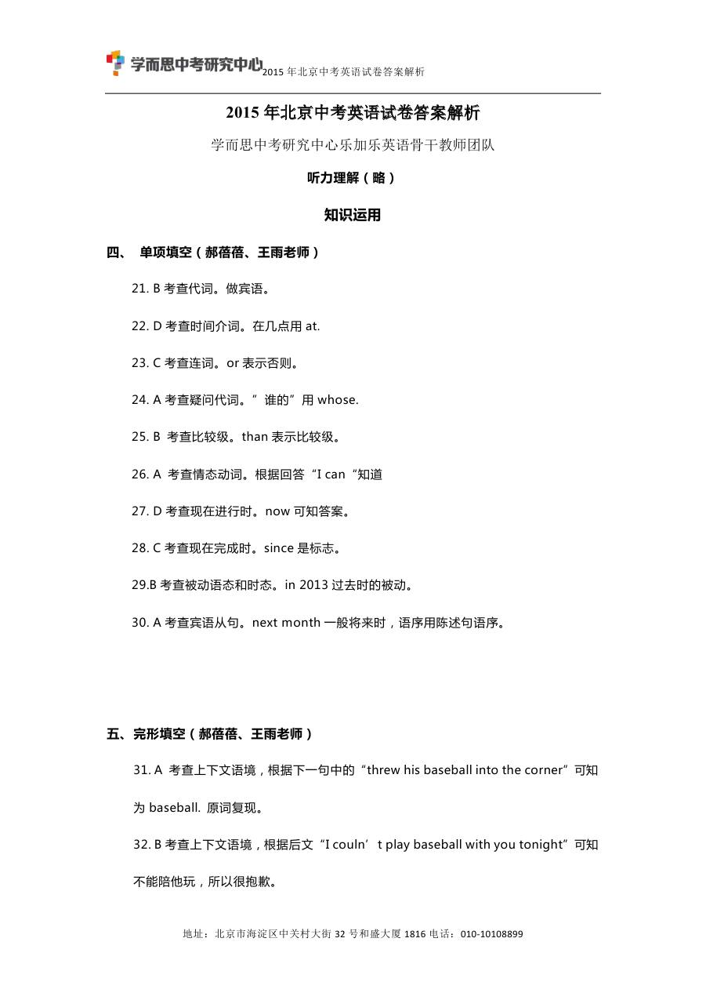
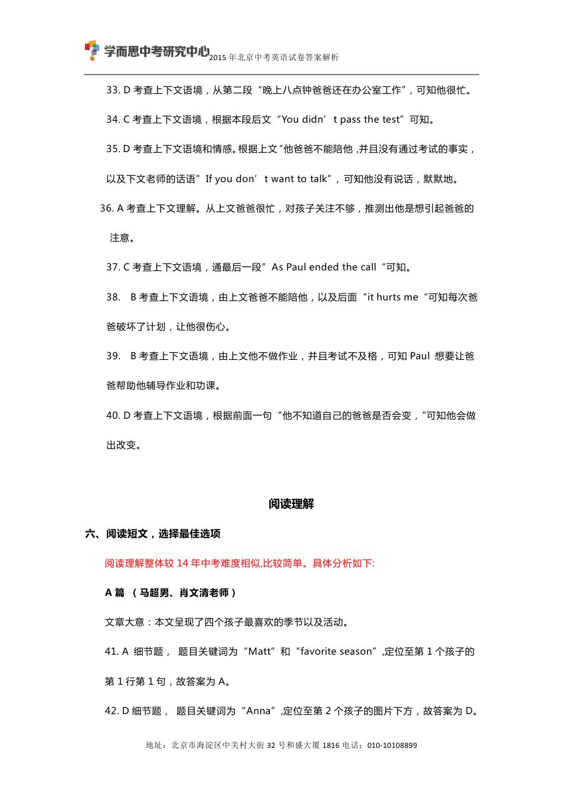
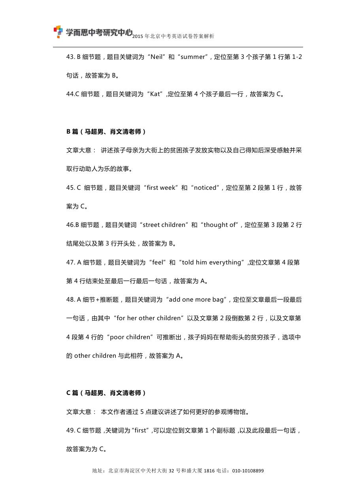
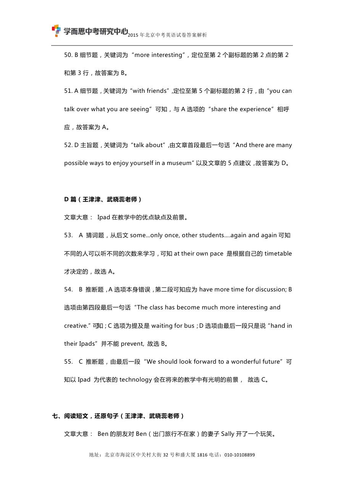
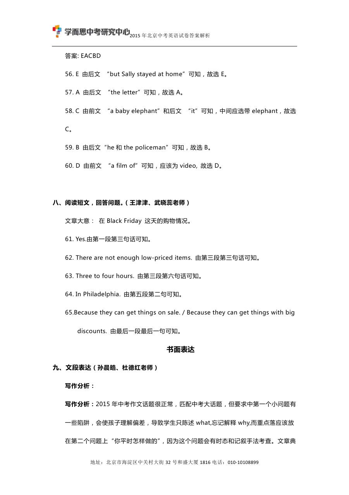
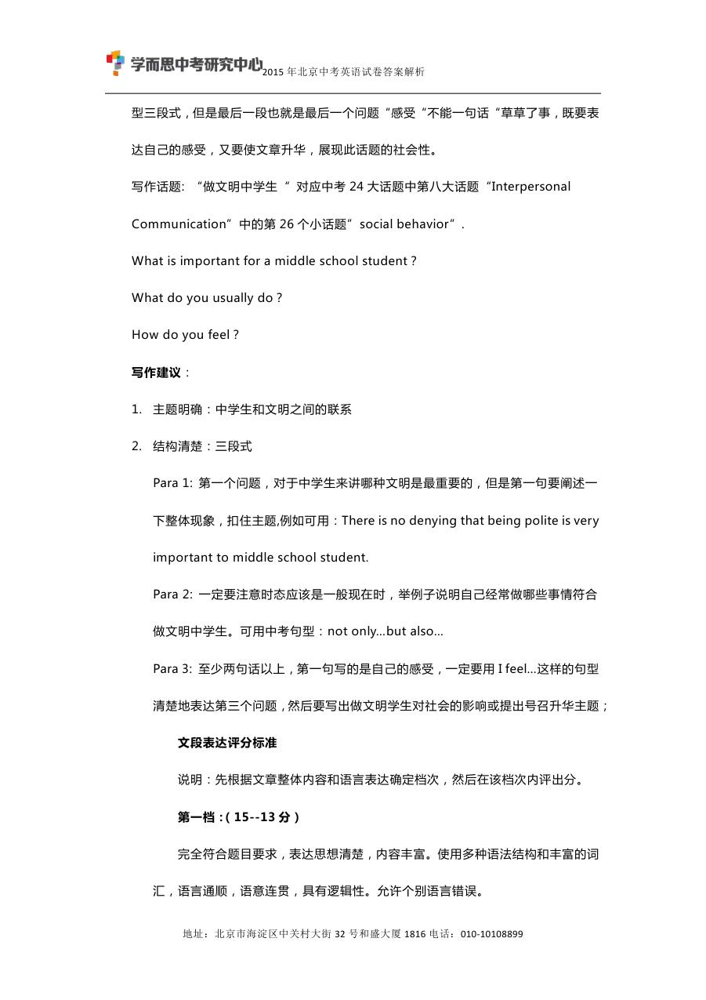
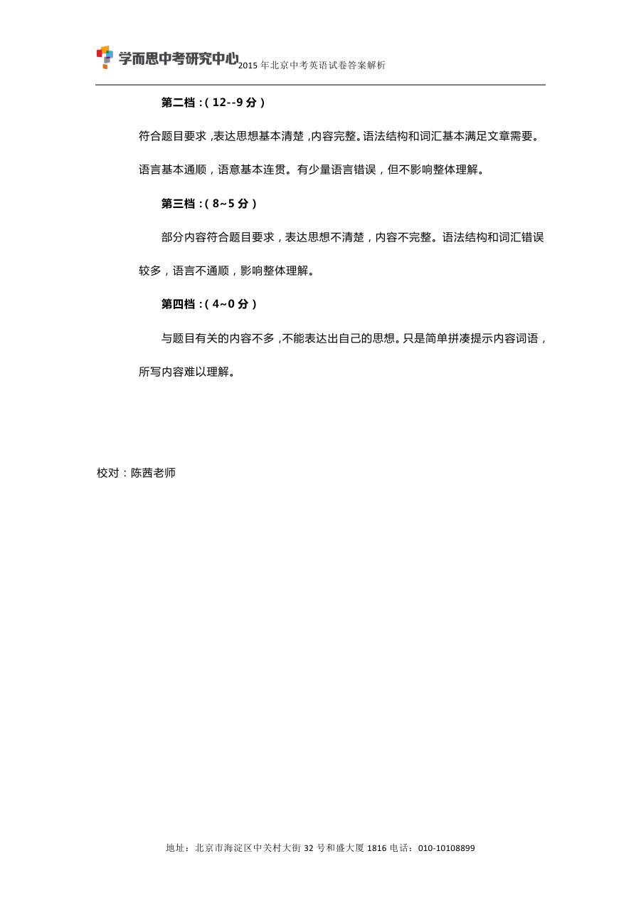